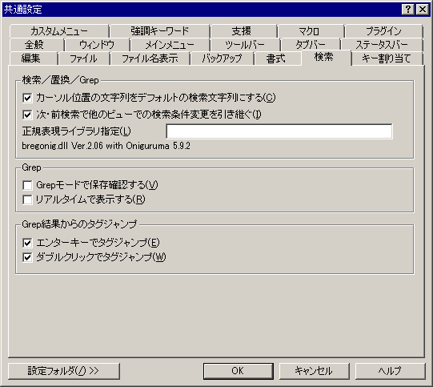

共通設定 『Grep』プロパティ
『全般』
『ウィンドウ』
『編集』
『ファイル』
『バックアップ』
『書式』
『クリッカブルURL』
『Grep』
『キー割り当て』
『カスタムメニュー』
『ツールバー』
『強調キーワード』
『支援』
『マクロ』
『ファイル名表示』

<Grep>
□
Grepモードで保存確認する
Grep
結果ウィンドウを閉じる際に結果を保存するかどうか確認します。
□
リアルタイムで表示する
Grep結果をリアルタイムに表示します。(sakura:1.4.3.0以降)
<Grep結果からのタグジャンプ>
Grep
結果ウィンドウでの動作を設定します。
■
エンターキーでタグジャンプ
エンターキーを押すだけでタグジャンプできるようにします。
タグジャンプ
とは、他のファイルの指定行へカーソルを移動させることです。
■
ダブルクリックでタグジャンプ
ダブルクリックで検索条件にマッチした行へタグジャンプできるようにします。